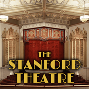
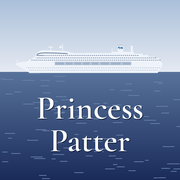
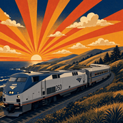
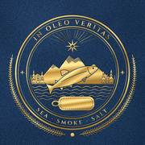
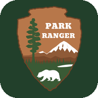

Stanford Theatre
What's now showing at Palo Alto's classic movie palace.
Visit →
Princess Patter
The daily Princess Cruises onboard newsletter, online.
Visit →🌉
Ship Movements ⚓
Golden Gate ship board: arrivals and departures under the bridge.
Visit →🚢
SF Cruises
Cruise ships approaching, arriving, and departing the Port of San Francisco.
Visit →
Long Distance Status
Live status of Amtrak's long-distance trains.
Visit →
Tinned Fish Passport
Track, rate, and collect the tinned fish you've tasted.
Visit →
Park Ranger
A family nature tracker for national parks: find, hear and log the birds, animals and plants you see.
Visit →